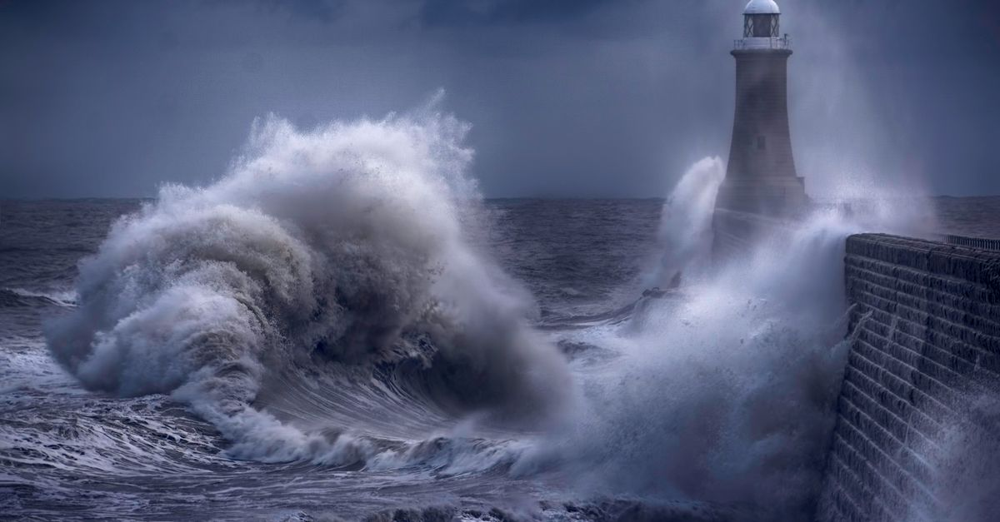
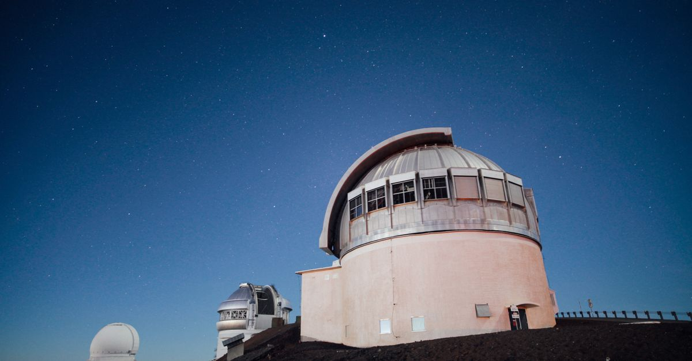
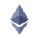
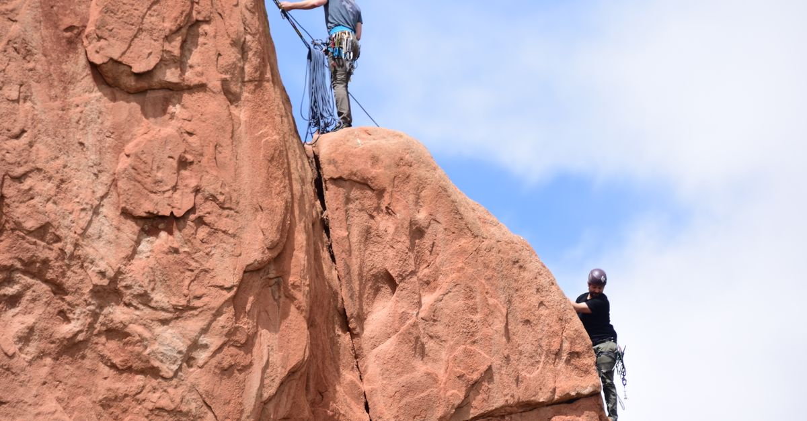

週次市場レポート2026年11月16日（月）
今週の3行まとめ
- 昨日の週足は $65,351（前週比 −12.7%）で6週連続の陰線。1週間のうちに 200日線・半値押し・講師の待機帯（$70,000〜68,000）・200週移動平均線（実測 $67,983）をすべて下に通過しました。週安値は $62,006 です。
- 一方で米国株は8月上旬以来の上昇幅（S&P500 +2.5%）。先週講師が分水嶺とした「株」は反発側で決着しましたが、ビットコインは株についていきませんでした。
- 売りの出どころは信用不安ではなく金利とドルと見られます — CPI の上振れで12月利上げがほぼ確実視され、米10年金利は 5.15% へ。警報器は「信用スプレッドが緩和・金利が再点灯」と色が入れ替わりました。
| 側 | 材料 | 位置づけ |
|---|---|---|
| 弱気 | 週足終値 $65,351（−12.7%）・50週線比 −12.9%・200週線比 −3.9% | 先週の「割れ幅1%未満ならダマシの余地」は否定。次の定点は「200週線を週足で取り戻せるか」 |
| 弱気 | CPI 上振れ → 12月利上げがほぼ確実視・10年金利 5.15%（週 +約0.3pt）・ドル指数は約1年半ぶり高値 | 論点は「利上げするか」から「0.25% か 0.5% か」へ。金利とドルに弱い資産が売られた |
| 弱気 | 現物 ETF は 7営業日連続の流出（計 −$1.9B）・今週は流入日ゼロ | 1日あたりの額は縮小したが、買いの日が消えた |
| 弱気 | BTC 大量保有の米上場企業が主要株価指数から除外確定（発効 11/30）・平均取得単価を約13%下回る水準に | 恒常的な買い手の逆回転。発効日まで機械的な売りが残り得る |
| 強気 | 米国株は反発（S&P500 +2.5%）・11/5 の安値を割らず | 講師の「鍵は株」は、株については反発側で決着 |
| 強気 | 信用スプレッドは 3.48% → 3.20% へ低下 | 講師の「来週落ち着けば少し安心」の条件を満たした。今回の急落は信用不安型ではない |
| 強気 | 恐怖指数は 10（7月の安値時を下回る）・先物の資金調達率はほぼゼロ | 過熱とは逆の状態。ただし「底打ち」を意味するものではない |
| 両義的 | 原油は $90 割れ・金も下落（1年超ぶりの安値圏） | インフレ圧力は低下方向。一方、金も売られており「逃避先」が機能した週ではない |
今週の一行: 「株が戻っても、ビットコインは戻らなかった。売りは『信用』ではなく『金利とドル』から来た — 警報器の色が入れ替わった週」。
答え合わせ — 1週間で節目を4つ通過した

先週は「50週線の割れ幅は1%未満。ダマシか本物かは来週の終値で」とお伝えしました。答えは下に決着です。どの節目を、いつ通過したのかを順に確認します。
- 判定の結果
- 50週線（実測 $75,035）比 −12.9%・200週線（実測 $67,983）比 −3.9%。判定ライン $82,814 との差は −0.96% → −3.2% → −5.4% → −9.6% → −21.1% と5週連続で拡大しました。
- ダマシの余地
- 先週残っていた「初回の試行はダマシ＝すぐ奪回」の可能性は否定されました。週の高値 $75,599 は月曜の一度きりで、50週線には届いていません。
- 講師の待機帯
- BTC の $70,000〜68,000 帯は 11/13（金）に到達し、翌 11/14 に下へ通過。ETH の $1,980〜2,020 帯も 11/10〜12 に到達後、11/13 に下抜けました（週足終値 $1,835・週安値 $1,711）。どちらもゾーン滞在は1〜3日でした。実際の対応は本日の配信でご確認ください。
- シナリオの現在地
- 講師想定は「③もう底を打った」60%／「①+② まだ下がある」40%で、先週は見直しを1週間持ち越しました。今週そろった材料は下の表のとおりです。確率をどうするかは本日の配信で講師からお伝えします。
見直しの判断材料 — 3つの箱に分けて整理
| 箱 | 材料 |
|---|---|
| 下方修正の方向 | 200週線を週足終値で下回った／株が反発した週に BTC は −12.7%（「株が戻れば BTC も」が今週は不成立）／金利とドルの逆風が強まった／ETF 7営業日連続流出・指数除外・ステーブルコイン供給の減少 |
| 据え置きの方向 | 信用スプレッドは 3.20% まで低下（信用不安型ではない）／米国株は 11/5 安値を割らず／原油は $90 割れ／恐怖指数 10・資金調達率ほぼゼロ／7月1日の安値 $57,800 には未到達 |
| 結果待ち | 11/17 大手半導体企業の決算／11/22 週足終値（200週線を取り戻すか）／11/30 指数除外の発効／12/4 雇用統計／12/8〜9 FOMC／12/17〜18 日銀 |
先週のレポートで下の節目として挙げた「8/21 安値 $73,005」は、急反発の途中の1日の安値でした。訂正してお伝えします。8月の安値は 8/1 の $62,275（Binance 日足で再確認）で、今週の安値 $62,006 はこれを日中にわずかに下回っています。その下の節目は 7月1日の安値 $57,800 です。
なぜビットコインだけが下げたのか — 信用ではなく、金利とドル
先週の配信で講師は「鍵は暗号資産より株。今晩の米国市場が分水嶺」とお伝えしました。株はその夜に反発しました。それでもビットコインが下げた理由を、起きた順に整理します。
- 株の答え合わせ
- 11/9（月）夜の S&P500 は +2.35% と反発し、週間でも +2.5%（ナスダック +2.3%・ダウ +2.1%）。8月上旬以来の上昇幅でした。「反発か下放れか」は反発側です。
- CPI の上振れ
- 11/10（火）の10月 CPI は総合 +0.4%・コア +0.3%（いずれも予想を 0.1pt 上回る）。FRB 理事が同日に示していた「コアが 0.3% 前後以上なら 0.5% の利上げを検討」という水準にちょうど着地しました。
- 金利とドル
- 12月の利上げはほぼ確実視され、論点は「0.25% か 0.5% か」へ（0.5% の織り込みは1割強）。米10年金利は 4.86% → 5.15%、ドル指数は約1年半ぶりの高値です。金利が付かない資産であるビットコインと金が、そろって売られました（金は週 −4.6%）。
- 需給の逆回転
- 現物 ETF は7営業日連続の流出（計 −$1.9B）で、年初来の純流出は約 −$2.0B に拡大。11/11 には BTC 大量保有の米上場企業が主要株価指数からの除外確定（発効 11/30 の取引終了時）。同社の保有 BTC は平均取得単価 $75,456 を約13%下回る水準になりました。
- 週末の急落
- 11/14〜15 の下げには、特定のニュースは確認できていません。「商いの薄い週末に $70,000 を割れ、買い持ちの強制決済が連鎖した」という説明が複数の報道で共通しています。原因を1つに決めつけない読み方が安全です。
警報器ダッシュボード — 色が入れ替わった
黒い縦線が先週の位置、色付きバーが今週の位置です。先週は「金利=黄・原油=黄・信用スプレッド=赤」でした。今週は信用スプレッドが緩和し、金利が警報ラインを再び上抜けています。
外部リサーチの視点 — 64日ぶりの新号。「7月が底」から「二段階の底」へ

定点観測中の外部リサーチ（サイト）が、11/11 に64日ぶりの新号を公開しました。9月号の「7月の安値が底として確定するか」という枠組みは、「一番底のあと、もう一度底を試す」二段階の見取り図に置き換わっています。なお同レポートは「相場環境の判断であり、価格目標や売買の指示ではない」と明記しています。
| 論点 | 9月号 | 11月号 |
|---|---|---|
| BTC の底 | 重要サポートが耐えれば「7月安値＝底」が確定 | 一番底は200週線の帯（$66,000〜72,000）、その後もみ合いと反発を経て、2027年終盤以降に二番底を試す想定 |
| 金融政策 | 市場は利下げ予想。「年内の利上げも生きている」と少数派の読み | 9月に実際に利上げ。「12月利上げはほぼ確実、論点は幅」 |
| 金 | Q4 は金がビットコインに優位 | 金は構造的な調整局面入り。週足終値 $3,875 割れが防衛線 |
| 株 | 高値更新の維持が基本 | ハイテク株は10月に最初の天井を付けた可能性。株全体の最後の高値は2027年半ば頃の想定 |
| アルトコイン | 「安定化は活性化ではない」 | 「FRB の資産拡大が再開するまで、土台づくりはできても上昇トレンドには入りにくい」 |
公開後の5日間で、現実はどう動いたか
| 新号が示した水準 | その後の実際 | 状態 |
|---|---|---|
| 一番底の帯 = 200週線 $66,000〜72,000 | 週足終値 $65,351・週安値 $62,006 | 帯の下限を下回って推移 |
| 12/9 までの短期想定で最も確率が高いレンジ = $64,000〜70,000 | 現在値はレンジ下端付近 | レンジ下端・一時下抜け |
| 金の防衛線 = 週足終値 $3,875 | 11/13 終値 $3,886・本日は日中 $3,864 | 攻防中 |
| 株は週足で節目（S&P500 約7,500）を維持できるかが分岐 | 11/13 終値 7,562 | 維持 |
| 10年金利は10月にピークアウト・短期は低下が基本 | 5.15% へ再上昇 | 短期見通しとは逆方向 |
読み方の注意: 新号の短期レンジに付いている確率（60%）は「12/9 までの BTC の値幅」についての数字で、講師のシナリオ確率（60%）とは別のものです。数字が同じなので混同にご注意ください。また、長期の見取り図は公開から5日で一部の前提が動いており、ひとつの見方として距離を置いて読むのが適切です。
安全の続報と銘柄フォロー — MEXC・Keplr・急騰は1件のみ
先週の配信で取り上げた2つのセキュリティ話題に続報があります。銘柄面では、時価総額上位100位以内の 7日間 +20% 超は1件だけでした。
MEXC 規制の続報
- 発効日の訂正
- 先週の配信では「12/6 発効」とお伝えしましたが、米連邦官報への掲載は 11/10（火）（官報の原文で確認）で、掲載30日後を起点にすると発効は 12/10（木）となります。訂正してお伝えします。
- 周辺の動き
- 大手取引所が MEXC 関連の入金を審査のため保留・出金を拒否する対応を取ったと報じられています。価格指標の算出元からも MEXC が外されました。MEXC 自体の入出金・取引は通常どおり稼働しています。
- 備え方
- 先週の対処の型（記録を保存／受け取り用の新しいウォレット／取引所を経由して別通貨に替える／大口は分割）は変わりません。追加点は「MEXC から他の大手取引所へ直接送らない」こと。なお、DEX で警告が出た・エアドロのポイントが無効になった、という実例は今週の時点で確認できていません。
Keplr 流出事件の続報
- 原因
- ウォレット本体ではなく、ソーシャルログインの提供元の基盤側の不具合と公表されました。
- 対象の追加
- Google に加えて Apple でログインして作成したウォレットも対象です。12/24個の英単語（リカバリーフレーズ）やハードウェアウォレットで作成したものは対象外で、当校マニュアルの手順（SafePal で作成 → Keplr にインポート）が対象外という説明は変わりません。
- ご注意
- 提供元が資産の一部を保護用ウォレットへ退避しており、残高が空でも盗難とは限りません。返還の手続きは今後発表される予定です。この件に便乗した「資産を取り戻します」という DM は詐欺ですので、応じないでください。
先週の急騰銘柄・アンロック教材の持続性チェック（レポートの定点観測）
| 銘柄 | 今週の実測 | 観察のポイント |
|---|---|---|
 RAIN RAIN | 7日間 +約70%（今週唯一の +20% 超） | 週を通じた上昇ではなく、本日未明の3〜4時間で価格が約2倍になった単発の急騰。公式発表などの材料は確認できず、それまでは下落が続いていました。一過性の可能性が高い動きです |
 BTW BTW | $1.09 → $0.43（7日間 −59%） | 先週「当日急落・即時回復型」と最終判定しましたが、1週間で崩れました。訂正してお伝えします。「アンロックの影響は事前の剥落が戻るかで測る」という物差しを、かえって補強する実例になりました |
講師注目銘柄フォロー（先週の配信で言及された銘柄）
| 銘柄 | 先週 | 今週 | 状況 |
|---|---|---|---|
| BTC | $74,851 | $65,351（週 −12.7%） | 講師の待機帯 $70,000〜68,000 に 11/13 到達・11/14 に下へ通過。200週線（$67,983）を週足で取り戻せるかが次の定点 |
 ETH | $2,127 | $1,835（週 −13.7%） | 待機帯 $1,980〜2,020 に 11/10〜12 到達・11/13 に下抜け。週安値は $1,711 |
※ 個別銘柄の記載は市場観察の記録であり、売買をすすめるものではありません。
来週に向けて — 200週線を取り戻せるか

答えが出るイベント（日付順・米国時間）
- 11/17（火）取引終了後 米大手半導体企業の決算 — 日本時間では 11/18（水）朝。株の反発が続くかの最初の関門です。
- 11/18（水）10月 FOMC 議事要旨 — 12月の利上げ幅（0.25% か 0.5% か）の手がかり。
- 11/22（日）週足終値 — 200週線（$67,983）を取り戻すか、7週連続の陰線か。下は $62,006 → $60,000 → 7月安値 $57,800、上は $69,100 → $72,600〜73,250。
- 11/30（月）指数除外の発効 → 12/4（金）雇用統計 → 12/8〜9 FOMC → 12/10（木）CPI・MEXC 命令の発効 → 12/11（金）つなぎ予算の期限 → 12/17〜18 日銀。
警報器の定点観測
- 最優先: 米10年金利 5.15% — 5.0% 割れに戻るか、10月のピーク（約5.36%）に迫るか
- 信用スプレッド 3.20% — 再び広がらないか
- 原油 — $90 割れが定着するか、$80 方向へ進むか
そのほか
- ETF: 連続流出が何営業日で止まるか（現在7営業日）
- 金: 週足終値 $3,875 を守れるか
- MEXC・Keplr: 他取引所の対応拡大、返還手続きの発表